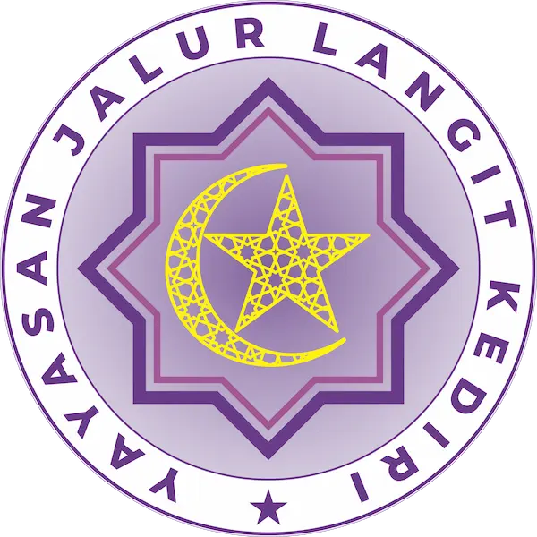
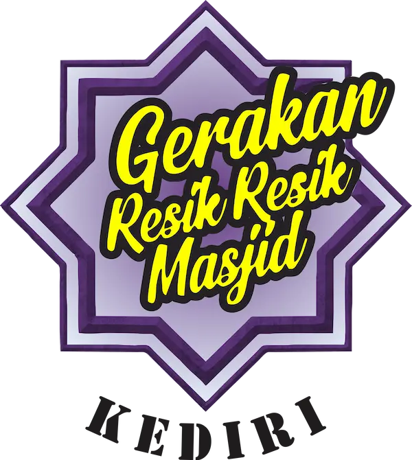

Yayasan Jalur Langit Kediri
Selamat Datang di Website Yayasan Jalur Langit Kediri
Gerakan Resik-resik Masjid Kediri
Selamat datang di website resmi Gerakan Resik-resik masjid kediri
Gerakan Resik-resik Masjid Kediri
Selamat datang di website resmi Gerakan Resik-resik masjid kediri
Resik Atine, Resik Masjid'e, Istiqomah
Kami membersihkan masjid GRATIS Tanpa biaya apapun, hubungi nomor Hotline kami untuk informasi lebih lanjut
Tanpa Biaya • Tanpa Muatan Politis
Menjadi inspirasi masyarakat untuk lebih peduli terhadap kebersihan lingkungan sekitar masjid.
Yayasan Jalur Langit Kediri adalah lembaga sosial keagamaan yang berfokus pada pemberdayaan masjid dan masyarakat di wilayah Kediri.
Kami percaya bahwa masjid yang bersih, nyaman, dan terawat akan menghadirkan kekhusyukan ibadah serta mempererat ukhuwah Islamiyah di tengah masyarakat.
Selengkapnya →

Gerakan Resik-resik Masjid (GRRM) Kediri adalah gerakan sosial yang digagas Yayasan Jalur Langit Kediri untuk membersihkan dan merawat masjid secara gratis.
Gerakan ini terbuka untuk masyarakat umum, tanpa dipungut biaya, dan tanpa muatan politis maupun golongan.
Dengan hormat,
Segala puji bagi Allah SWT yang telah memberikan nikmat iman dan kesehatan sehingga kita dapat melaksanakan ibadah dengan baik, serta sholawat dan salam semoga selalu tercurahkan kepada junjungan kita Nabi Muhammad SAW yang telah menunjukkan jalan yang benar bagi umatnya.
Dalam rangka upaya ikut MEMAKMURKAN MASJID, maka kami Yayasan Jalur Langit Kediri melakukan kegiatan Gerakan Resik-Resik Masjid GRATIS untuk ikut memberikan manfaat kepada masyarakat, antara lain:
Demikian kami sampaikan, mohon doa restu serta dukungan dan bimbingannya agar Gerakan Resik-Resik Masjid Kediri Gratis selalu ISTIQOMAH.
Hormat Kami,
Gerakan Resik-Resik Masjid Kediri